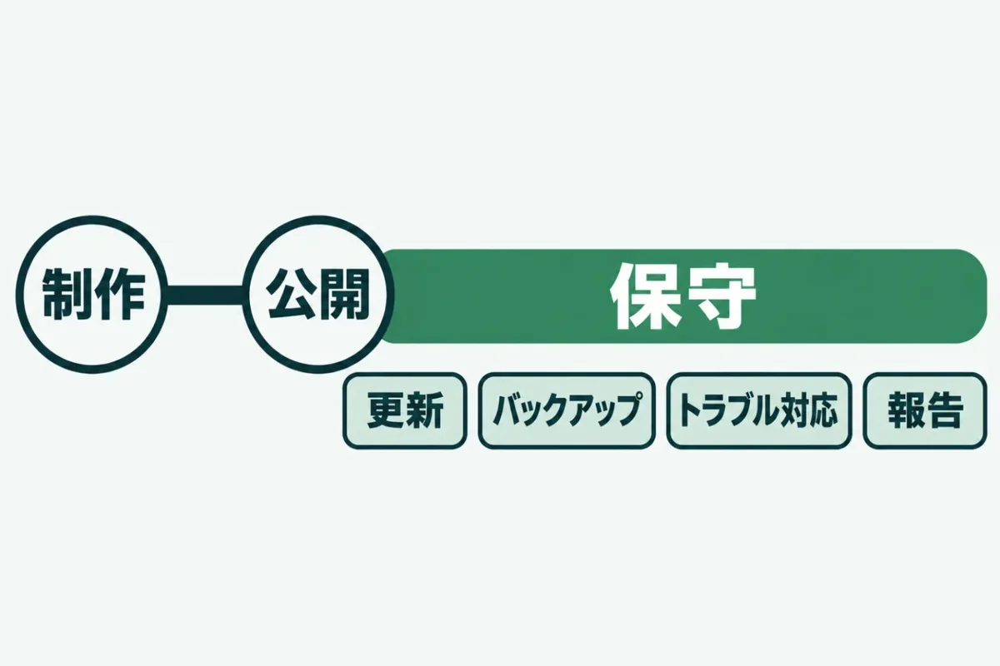
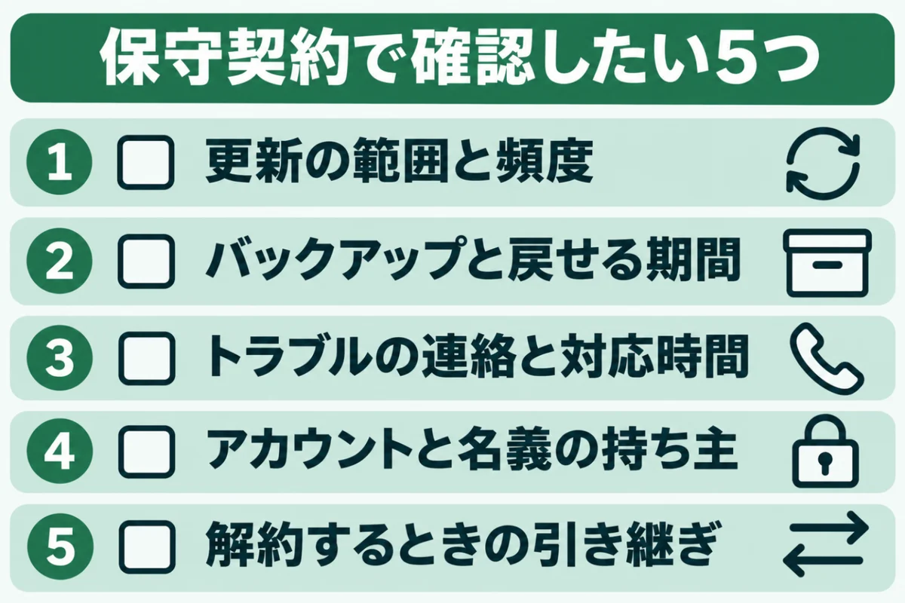
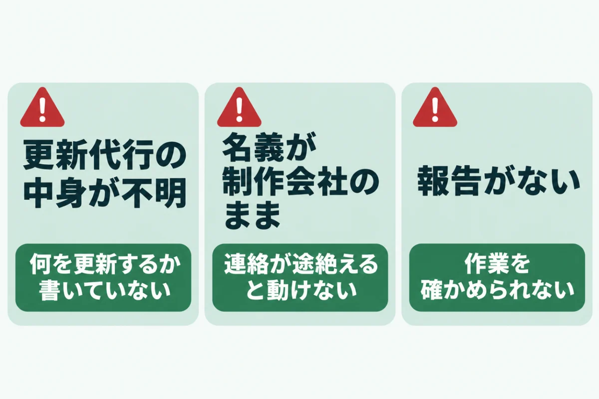
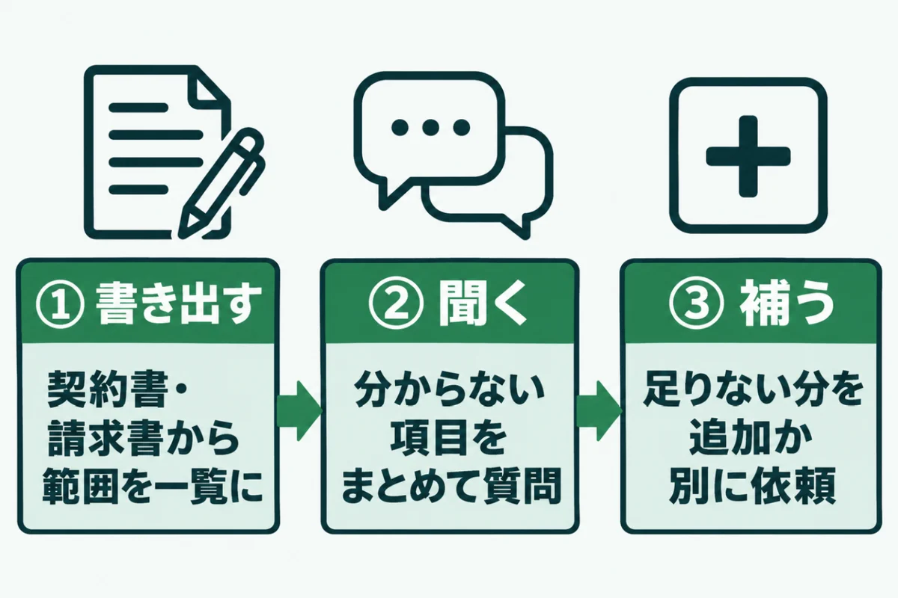
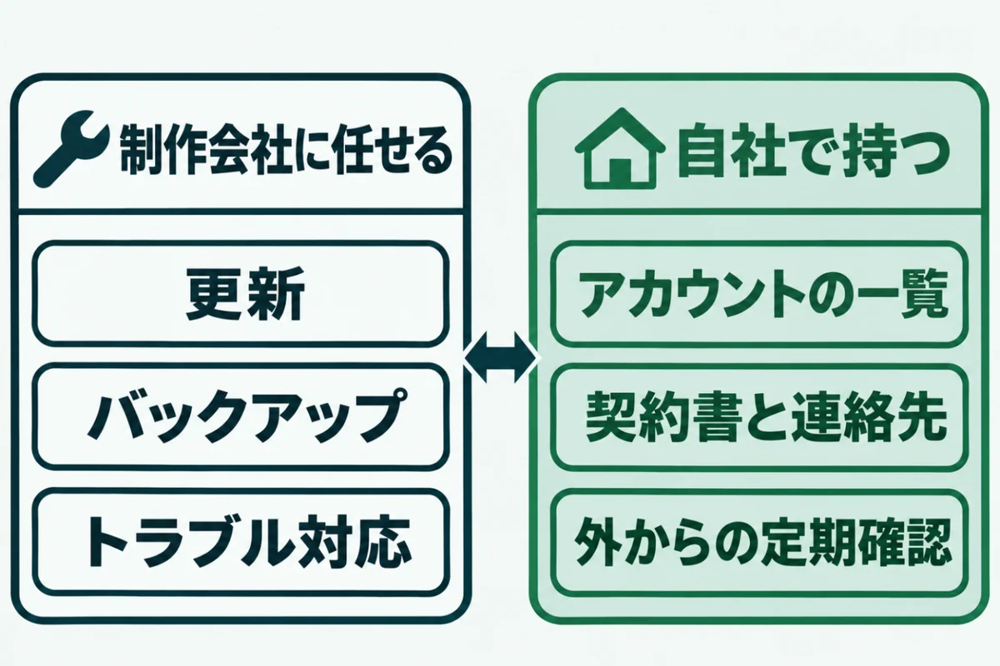

制作会社に任せたホームページ、保守契約で確認したいこと5つの項目と見直しの手順

「制作会社に保守をお願いしているけれど、実際に何をしてくれているのか分からない」と感じていませんか？
保守契約の中身は、会社ごとに大きく違います。更新もバックアップも任せているつもりが、契約には書かれていないこともあるのです。
この記事では、ホームページの保守契約で確かめたい項目と、よくある抜け、見直しの手順を紹介します。社内で持っておくものもまとめました。
もとにしたのは、IPAのウェブサイトの運用管理の手引きと、個人情報保護委員会のガイドラインです。運営者の自社サイトの点検で分かったことも入れています。手元に契約書を用意して、照らし合わせながら読み進めてください。
ホームページの保守契約とは？作って終わりにならない理由

ホームページは、公開した日から古くなり始めます。保守契約は、公開後の手入れを誰が受け持つかの約束です。
WordPressの本体やプラグインには、弱点が見つかるたびに直した版が出ます。放っておけば、その弱点を突かれる入口になるわけです。まずは、保守契約で何を決めるのかを押さえておきましょう。契約書を開きながら読むと、自社の場合と比べやすくなります。
保守契約で決めるのは「誰が・何を・いつ」
保守契約は、公開後の作業を誰が、どこまで、どのくらいの間隔で行うかを決めるものです。更新やバックアップ、トラブルのときの対応が主な中身になります。
大切なのは、契約に書かれていない作業は、誰もやらないと考えておくことです。発注した側は任せたつもりでも、制作会社は頼まれていないと思っていることがあります。お互いの思い込みを防ぐには、作業の範囲を文書で残すことが欠かせません。口約束のままの部分があれば、この機会に書き出しておきましょう。
事業者の受け持つ範囲を知っておく
IPAの「安全なウェブサイトの運用管理に向けての20ヶ条」を見てみましょう。外のサービスを使うときの心がけも書かれています。事業者がどこまで対策しているかを知り、足りない分は自分たちで補うという考え方です。
これは、サーバー会社と制作会社のどちらにも当てはまります。サーバー会社が守るのはサーバーまで、WordPressの中は利用者側の受け持ちです。その中身を制作会社に任せるなら、範囲を契約で決めておく必要があります。3者の受け持ちを一枚の表にしておくと、抜けが見つけやすくなるでしょう。
個人情報を扱うなら委託先の監督も求められる
お問い合わせフォームなどで個人情報を受け取っている場合、その扱いを制作会社に任せることがあります。個人情報保護委員会のガイドラインは、こうした委託先を監督するよう求めているのです。
中身は、適切な委託先を選ぶこと、契約を結ぶこと、扱いの状況を把握することの3つとされています。契約に安全管理の約束を入れておくことが、監督の土台になるでしょう。フォームの送信内容が誰のメールに届き、どこに残るかも確かめておいてください。保守契約を見直すときに、あわせて書き足せる項目です。
ホームページの保守契約で確認したい5つの項目

契約書を手元に置き、次の5つが書かれているかを確かめます。書かれていない項目は、制作会社に聞いて確かめるのが確実です。
どれも、トラブルが起きてから慌てて調べることになりがちな項目といえます。平時のうちに答えをもらっておけば、いざというときに迷いません。確かめた答えは、契約書と一緒に保管しておきましょう。
① 更新の範囲と頻度
まず、何を更新してくれるのかを確かめます。本体だけか、プラグインやテーマ、PHPの版の切り替えまで含むかで、守れる範囲は大きく違うのです。
次に、どのくらいの間隔で更新するのかを見ましょう。作業の記録を見せてもらえるかも聞いておくとよいでしょう。「月に1回」と「弱点が見つかったらすぐ」では大違いです。重大な弱点が公表されたときに、どのくらいで対応するかも聞いておいてください。更新のあとに表示を確かめているかどうかも、大切な確認の点になります。
② バックアップと戻せる期間
バックアップを誰が、どこに、どのくらいの頻度で取っているかを確かめます。サーバー会社の自動バックアップだけに頼っている場合は、何日前まで戻せるかが重要です。
運営者の自社サイトのサーバーでは、Webデータは7日分、データベースは14日分でした。気づくのが遅れると、きれいな状態に戻せないこともあります。戻す作業を誰が行い、費用がかかるのかも、あわせて決めておきましょう。実際に戻す練習をしたことがあるかも、聞いておくと安心です。
③ トラブルのときの連絡と対応時間
改ざんや表示の崩れが起きたとき、誰にどの方法で連絡すればよいかを確かめます。電話かメールか、夜間や休日も受け付けるかで、動き出せる早さが変わるのです。
あわせて、連絡してから何時間以内に動いてくれるかを聞いておきましょう。改ざんの対応が保守の料金に含まれるのか、別の見積もりになるのかも大事な点です。担当者が休みのときの代わりの窓口も、決まっているか確かめてください。連絡先は、社内の誰が見ても分かる場所に書き残しておきます。
④ アカウントと名義の持ち主
WordPressの管理者、サーバー、ドメインの3つを確かめます。それぞれの名義と、管理画面に入る情報を誰が持っているかです。制作会社の名義のままだと、自社では何も変えられません。
運営者の自社サイトの点検でも、数年前の外注先の編集者のアカウントが2つ残っていました。自社の管理者アカウントを1つは必ず持っておくのが基本です。制作会社が使うアカウントは、作業に要る権限だけにしておきましょう。ドメインの更新の期限と支払う人も、あわせて確かめておくと安心です。
⑤ 解約するときの引き継ぎ
保守契約をやめるとき、何を受け取れるのかを確かめます。サイトのファイル、データベース、アカウントの情報、作業の記録などです。
引き継ぎの中身が決まっていないと、解約したとたんに手が出せなくなることがあります。テーマに制作会社の独自の部品が入っている場合は、使い続けてよいかも聞いておきましょう。解約の何か月前に申し出るかや、引き継ぎに費用がかかるかも、契約で確かめてください。いざ乗り換えるときに、この準備が大きな差になります。
ホームページの保守契約でよくある抜け

保守契約を結んでいても、中身があいまいなまま続いていることがあります。名前が「保守」でも、守る中身は契約しだいです。
次の3つは、契約書を読み直したときに見つかりやすい抜けといえます。当てはまるものがあれば、次の見直しの手順で確かめていきましょう。どれも、制作会社に一度聞けば答えが分かるものばかりです。長く続いている契約ほど、見直す価値があります。
「更新代行」の中身が書かれていない
契約書に「更新代行」や「サイト管理」とだけ書かれていて、具体的な作業が分からないことがあります。文章や画像の差し替えだけを指し、本体やプラグインの更新は入っていない場合もあるのです。
この抜けがあると、誰も更新しないまま何年も過ぎるおそれがあります。何年も更新していないサイトは、一気に上げると壊れやすく、段階を踏んだ作業が必要です。作業の中身を、本体、プラグイン、テーマ、PHPのように分けて書いてもらいましょう。書き分けた一覧があれば、毎月の作業の報告とも照らし合わせられます。
サーバーとドメインの名義が制作会社のまま
制作のときに、制作会社がサーバーとドメインをまとめて契約していることがあります。そのまま保守を続けていると、名義を確かめないまま年月がたつのです。
名義が制作会社のままだと、制作会社と連絡が取れなくなったときに動けません。ドメインの更新を忘れられると、サイトもメールも止まってしまうでしょう。名義を自社に移せるか、移すならいつ、どう進めるかを相談しておいてください。自社で持つ場合も、更新の期限は保守契約の中で見てもらうと安心です。
点検の結果が報告されない
保守の料金を払っていても、何をしたかの報告がない場合があります。報告がなければ、作業が続いているのかを確かめようがありません。毎月の請求書に、作業の中身が書かれていない場合も同じです。
月に一度でよいので、更新した内容と、見つかった問題を報告してもらうようにしてください。IPAの手引きも、外部の組織による診断や点検を定期的に受けることを勧めています。報告の形は、短いメールでも十分です。報告がないまま続いている契約なら、この機会に頼んでみましょう。
今のホームページの保守契約を見直す手順

見直しは、今の契約で何が含まれているかを知るところから始めます。いきなり解約や乗り換えを考えなくて大丈夫です。
多くの場合は、聞いてみれば答えが分かり、足りない部分だけを足せば済みます。制作会社との関係を壊さずに進めるためにも、順番に確かめていきましょう。次の3つの段階で進めると、話がこじれにくくなります。
契約書と請求書から今の範囲を書き出す
まず、保守契約の契約書や見積書、毎月の請求書を集めます。書かれている作業の名前と料金を、一覧に書き出してください。表計算のソフトに、作業の名前を1行ずつ並べると整理しやすくなります。
そのうえで、先ほどの5つの項目と照らし合わせてください。書かれていない項目に印を付けておくと、次に聞くことがはっきりするでしょう。契約書が見つからない場合は、制作会社に写しを送ってもらいましょう。長く続いている契約ほど、最初の取り決めを社内の誰も覚えていないことがあるからです。
分からない項目を制作会社に聞く
印を付けた項目を、メールでまとめて聞きます。「本体の更新は含まれていますか」のように、はいかいいえで答えられる形にすると返事が早くなるでしょう。
責める調子ではなく、社内で確かめたいので教えてほしいという聞き方にすると角が立ちません。答えをもらったら、一覧に書き込んで保存しておきます。電話で聞いた場合も、要点をメールで送り返して残しておいてください。担当者が替わっても、同じ答えを確かめられるようになります。
足りない部分を足すか、別に頼む
答えがそろったら、足りない部分をどう補うかを決めます。今の制作会社に追加で頼むか、別の会社に一部だけ頼むかの2つが主な選び方です。
毎月続く作業は、サイトの中身を知っている今の制作会社に頼むほうが進めやすいでしょう。外からの点検のように、第三者の目が役に立つ作業は、別の会社に頼む方法もあります。ホームページのセキュリティ対策の費用相場｜無料・月額・単発の目安と抑え方も参考にしてください。
ホームページの保守契約とは別に自社でやること

保守を任せていても、自社でしかできないことがあります。任せきりにせず、確かめる手段を手元に残すことが大切です。
難しい作業は要りません。持っておくべき情報をそろえ、ときどき外から様子を見るだけで、問題に早く気づけるようになります。次の2つを、社内の担当者を決めて続けましょう。どちらも、月に数十分あれば続けられる作業です。
社内で持っておく情報
アカウントの一覧、保守契約の契約書、制作会社の連絡先を、社内の決まった場所にまとめます。パスワードそのものは、パスワード管理の仕組みなど安全な場所に分けて保管してください。
担当者が1人しか知らない状態だと、その人が休んだだけで何もできなくなるおそれがあります。少なくとも2人が、どこに何があるかを知っている状態にしておきましょう。年に一度は一覧を見直し、辞めた人や使わなくなったアカウントを消しておきます。
外から定期的に確かめる
保守の報告とは別に、自分たちでもサイトの状態を外から確かめましょう。WordPressの版が古くないか、見覚えのないページや警告が出ていないかを見るのです。
外からの確認は、保守がきちんと続いているかを知る手がかりにもなります。報告では更新済みなのに版が古いままなら、制作会社に理由を聞いてみてください。月に一度、決まった日に確かめると習慣にしやすくなります。確かめた結果は、保守の報告と並べて保存しておくと比べやすいでしょう。
URLを入れるだけで、WordPressやプラグインの版、PHPなど8項目を無料で判定します。登録はいりません。
無料で診断するホームページの保守契約に関するよくある質問
保守契約を結んでいないと、何か問題がありますか？
保守契約がなくても、自社で更新やバックアップを続けていれば問題はありません。困るのは、誰も手入れをしないまま年月がたつ場合です。本体やプラグインが古いままになり、弱点を突かれる入口が増えていきます。自社で続けるのが難しいなら、更新だけでも誰かに任せる形を考えてください。まずは、今の版が古くないかを確かめることから始めましょう。
制作会社と連絡が取れなくなったら、どうすればいいですか？
まず、サーバーとドメインの契約が誰の名義かを確かめます。自社の名義なら、サーバー会社に連絡して管理画面に入る手続きを相談できるでしょう。制作会社の名義の場合は、ドメインやサーバーの更新が止まる前に動く必要があります。サーバー会社やドメインの会社に、名義の移し替えの方法を問い合わせてください。日ごろからアカウントの一覧を持っておくと、こうした場面で慌てずに済みます。
保守契約をやめたら、サイトはどうなりますか？
契約をやめても、サイトがすぐに消えるわけではありません。ただし、サーバーやドメインを制作会社が契約している場合は、更新されずに止まることがあります。やめる前に、名義と引き継ぐものを確かめておきましょう。管理者のアカウントやファイル、データベースの控えを受け取っておけば、ほかの会社に頼むこともできます。解約の申し出の時期も、契約書で確かめておいてください。
セキュリティの点検は、保守契約に含まれていますか？
含まれているかどうかは、契約によって違います。更新は入っていても、弱点の点検や改ざんの見張りは別の扱いになっていることが多いです。契約書に「点検」や「監視」の言葉があるかを確かめ、なければ制作会社に聞いてみましょう。含まれていない場合は、追加で頼むか、外部の点検を別に使う方法があります。点検の結果を報告してもらう形にしておくと、中身を確かめやすくなるでしょう。
保守の料金は、高いほど安心ですか？
料金の高さだけでは、安心かどうかは分かりません。大切なのは、料金に何の作業が含まれているかです。同じ月額でも、更新と報告まで入っている契約と、問い合わせの受付だけの契約があります。料金を比べるときは、この記事の5つの項目がそろっているかで見比べてください。足りない項目があれば、その分を足したときの料金で比べると公平です。
まとめ
ホームページの保守契約は、公開後の手入れを誰が受け持つかの約束です。契約に書かれていない作業は、誰もやらないと考えておきましょう。
更新の範囲、バックアップ、トラブルの連絡、名義、解約時の引き継ぎの5つを確かめてください。任せる部分と、自社で持つ部分を分けておくことが、長く安全に続けるこつです。
まずは、今の状態を知るところから。
URLを入れるだけで、数十秒で判定が出ます。登録はいりません。